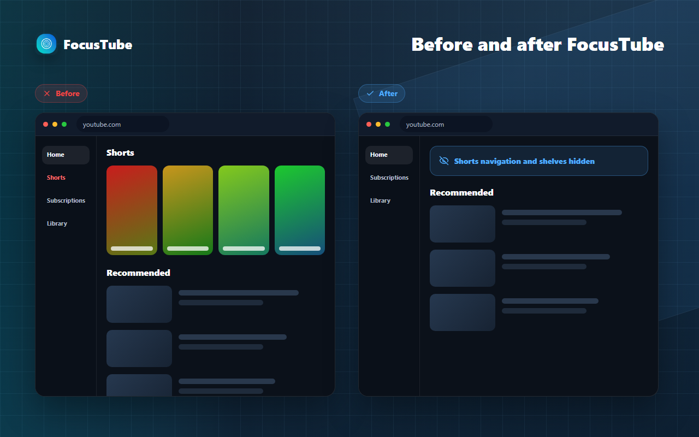

YouTube
Block YouTube Shorts without blocking YouTube.
FocusTube can stop Shorts routes and remove common Shorts entry points while regular videos, subscriptions, search, and library pages remain available.
What FocusTube changes
- Shorts routes
- Strict mode redirects away from YouTube URLs containing `/shorts/`. Warn mode places a decision screen before access.
- Shorts button
- The Shorts navigation entry can be hidden from the main and compact YouTube sidebars.
- Shorts shelves
- Shorts shelves, Shorts-linked feed items, and supported Shorts tabs or chips can be removed from view.
- Subscriptions shelf
- An optional control hides the English "Most relevant" shelf only on `/feed/subscriptions`.
What stays available
- Regular video watch pages and channels.
- YouTube search, subscriptions, playlists, history, and library areas.
- Comments, descriptions, and other normal video controls.
- Any visual control you choose to leave enabled.
Language limitation: the optional "Most relevant" shelf setting currently matches that English heading. Shorts route and structural shelf blocking do not depend on that heading.
How the modes behave
- Strict
- Moves you away from a Shorts page immediately, using YouTube's own Home navigation where available.
- Warn
- Shows a warning before Shorts. Watch Anyway allows the current visit until the relevant page session resets.
- Passive
- Leaves Shorts routes alone. Separate visual hiding controls can still remove buttons and shelves.
A targeted before and after
This is the main distinction: the Shorts shelf disappears, while the rest of YouTube remains usable.

Related blockers
Install FocusTube
Use the same extension on Chrome, Firefox, or Microsoft Edge.